## Popularity on the 3D-Euclidean Roommates Problem <section style="height: 66%;"> <div style="height:100%; width:100%"> <div id="coverPageDiv" style="display: block; width:100%; height:100%; text-align: -moz-center;"></div> <h3 style="text-align: center;vertical-align: bottom;">Steven Ge</h3> </div> </section> --- ### Table of Contents <section> - Preliminaries - 3D-Euclidean Roommates Problem - Popularity - Results - Theorem: strict popularity with room size 3 is co-NP-hard - Planar and Cubic Exact Cover by 3-Sets Problem (PC-X3C) - Reduction Strategy - Reduction Sketch - Future Work - Complexity - Popularity with room size 2 - (Mixed/Strict) Popularity with room size $\geq 3$ - Pros and cons </section> --- ### Preliminaries #### 3D-Euclidean Roommates Problem <!-- ----------------------------------roommate diversity problem description---------------------------- --> <!-- graph 1 --> <section class="graph-section" id="graph1_euclid" data-transition="fade out"> <h5>Andecdote</h5> <div style="width: 100%;"> <div style="width: 49%; float: left;font-size: 0.65em;"> <ul> <li data-fragment-index="0" class="fragment">Drones</br> <ul> <li data-fragment-index="1" class="fragment">Coordinates in 3D Space</li> </ul> </li> <li data-fragment-index="3" class="fragment">Groups of constant size $s$ <ul> <li data-fragment-index="4" class="fragment">$s=3$</li> <li data-fragment-index="5" class="fragment">Consider drone h</li> </ul> </li> <li data-fragment-index="8" class="fragment">Preference only depends on:<br> <span data-fragment-index="9" class="fragment">Sum of distances to group members</span> <ul> <li data-fragment-index="10" class="fragment">The smaller the sum, the better</li> </ul> </li> </ul> </div> <div data-fragment-index="2" style="margin-left: 50%;width:50%" id="graph1-plotly" class="fragment graph"></div> <div data-fragment-index="6" id="graph1-plotly-1" class="fragment"></div> <div data-fragment-index="7" id="graph1-plotly-2" class="fragment"></div> <div data-fragment-index="11" id="graph1-plotly-3" class="fragment"></div> <div data-fragment-index="12" id="graph1-plotly-4" class="fragment"></div> </div> </section> <section class="graph-section" data-transition="fade in"> <h5>Problem Statement</h5> <div style="width: 100%;"> <div style="width: 49%; float: left;font-size: 0.65em;"> <ul> <li data-fragment-index="0" class="fragment">Agents $N$</br> <ul> <li data-fragment-index="1" class="fragment">Embedding $E: N \rightarrow \mathbb{R}^3$</li> </ul> </li> <li data-fragment-index="2" class="fragment">Room size $s \in \mathbb{N}$ <ul> <li data-fragment-index="3" class="fragment">$s=3$</li> </ul> </li> <li data-fragment-index="5" class="fragment">Preference of $a \in N$ only depends on:<br> <ul> <li data-fragment-index="6" class="fragment">Sum of distances to its roommates in $R \subseteq N$, where $|R| = s$</li> <li data-fragment-index="7" class="fragment">$R \succsim_{a} R' \iff \sum\limits_{a' \in R}\delta(a, a') \leq \sum\limits_{a' \in R'}\delta(a, a')$</li> </ul> </li> <li data-fragment-index="8" class="fragment">Game $G = (N, s, E)$</li> <li data-fragment-index="9" class="fragment">Outcome $\pi \subseteq \{R \subseteq N \mid |R| = s\}$</li> <br> <li data-fragment-index="10" class="fragment">$R \succsim_a R'$ <span data-fragment-index="11" class="fragment" style="color:green">✓</span></li> <li data-fragment-index="12" class="fragment">$\pi \succsim \pi'$ <span data-fragment-index="13" class="fragment" style="color:red">?</span></li> </ul> </div> <div style="margin-left: 50%;width:50%" id="graph2-plotly" class="graph"></div> </div> </section> --- ### Preliminaries #### Popularity$^{\text{[1]}}$ <!-- -----------------------------------graph 3------------------------------------- --> <section class="graph-section" id="graph3"> <!-- <h5>Definition</h5> --> <div style="width: 100%;"> <div style="width: 49%; float: left;font-size: 0.65em;"> <ul> <li data-fragment-index="0" class="fragment">Outcomes (Partitioning of Agents)</br> <ul> <li data-fragment-index="1" class="fragment">$\pi$</li> <li data-fragment-index="5" class="fragment">$\pi'$</li> </ul> </li> <li data-fragment-index="13" class="fragment">$\pi$ is more popular than $\pi'$ <ul> <li>(Strictly) More $\vee$ than $\wedge$</li> </ul> </li> </ul> <p></p> <br> <br> <ul> <li data-fragment-index="14" class="fragment">$\pi$ is popular <ul> <li data-fragment-index="15" class="fragment">No other outcome $\pi'$ is more popular than $\pi$</li> </ul> </li> <p></p> <li data-fragment-index="16" class="fragment">$\pi$ is strictly popular <ul> <li data-fragment-index="17" class="fragment">$\pi$ is more popular than any other outcome $\pi'$</li> </ul> </li> <p></p> <li data-fragment-index="19" class="fragment">$p$ is mixed popular <ul> <li data-fragment-index="20" class="fragment">$p$ is a probability distribution over all possible outcomes $\Pi$</li> <li data-fragment-index="21" class="fragment">$p$ is expected to be more popular than any other probability distribution $q$ <ul data-fragment-index="21" class="fragment"> <li>$E_p[\Pi] \geq E_q[\Pi]$</li> </ul> </li> </ul> </li> </ul> </div> <div data-fragment-index="2" style="margin-left: 50%;width:50%" id="graph3-cy" class="fragment graph"></div> <div data-fragment-index="3" id="graph32-cy" class="fragment"></div> <div data-fragment-index="4" id="graph33-cy" class="fragment"></div> <div data-fragment-index="6" id="graph34-cy" class="fragment"></div> <div data-fragment-index="7" id="graph35-cy" class="fragment"></div> <div data-fragment-index="8" id="graph36-cy" class="fragment"></div> <div data-fragment-index="9" id="graph37-cy" class="fragment"></div> <div data-fragment-index="10" id="graph38-cy" class="fragment"></div> <div data-fragment-index="11" id="graph39-cy" class="fragment"></div> <div data-fragment-index="12" id="graph310-cy" class="fragment"></div> </div> </section> --- ### Results #### <b>Theorem:</b> strict popularity with <span style="color:red"><b>room size 3</b></span> is <span style="color:red"><b>co-NP-hard</b></span> <section></section> <section class="graph-section" data-transition="fade out"> <h5>Exact Cover by 3-Sets Problem$^{\text{[1]}}$</h5> <div style="width: 49%; float: left;font-size: 0.65em;"> <ul> <li data-fragment-index="2" class="fragment"> Exact 3-set Cover (X3C) <ul> <li data-fragment-index="3" class="fragment"> Universe $X = \{1, \dots, m\}$ </li> <li data-fragment-index="5" class="fragment"> 3-sets $\mathcal{C} = \{C_1, \dots, C_q\}$ </li> <ul> <li data-fragment-index="6" class="fragment"> $C_i \subseteq X$ </li> <li data-fragment-index="7" class="fragment"> $|C_i| = 3$ </li> </ul> <li data-fragment-index="21" class="fragment"> Does there exist a set $S \subseteq \mathcal{C}$ of 3-sets that partitions $X$? </li> <ul> <li data-fragment-index="22" class="fragment"> E.g. {<span style="color:rgba(240, 186, 152, 1)" class="colored-text fragment" data-fragment-index="9">$C_1$</span>, <span style="color:rgba(228, 46, 235, 1)" class="colored-text fragment" data-fragment-index="11">$C_2$</span>, <span style="color:rgba(108, 62, 31, 1)" class="colored-text fragment" data-fragment-index="15"> $C_4$</span>} is <span style="color:red">NOT</span> a solution. </li> <li data-fragment-index="24" class="fragment"> E.g. {<span style="color:rgba(240, 186, 152, 1)" class="colored-text fragment" data-fragment-index="11">$C_1$</span>, <span style="color:rgb(27, 33, 11, 1)" class="colored-text fragment" data-fragment-index="17">$C_6$</span>} <span style="color:green">IS</span> a solution. </li> </ul> <!-- <li data-fragment-index="25" class="fragment"> Planar and Cubic </li> <ul> <li data-fragment-index="27" class="fragment"> Cubic <ul> <li data-fragment-index="28" class="fragment"> Each element in $X$ is contained in exactly three 3-sets of $C$. </li> </ul> </li> </ul> <ul> <li data-fragment-index="30" class="fragment"> Planar <ul> <li data-fragment-index="31" class="fragment"> Corresponding graph is planar. </li> </ul> </li> </ul> --> <li data-fragment-index="26" class="fragment"> X3C instance $I = (X,\mathcal{C})$. </li> <li data-fragment-index="35" class="fragment"> Exact 3-set Cover problem is NP-complete </li> </ul> </ul> </div> <div style="margin-left: 50%;width:50%; height:8em" id="graph1-cy_x3c" data-fragment-index="4" class="fragment graph fade-in"></div> <!-- <div style="margin-left: 50%;width:50%; height:8em; display:none" id="graph10-cy_x3c" data-fragment-index="26" class="fragment graph fade-in"></div> --> <div data-fragment-index="4" class="fragment"> <p> $X = \{1,2,3,4,5,6\}$ </p> <div id="x3c1" class="fragment" data-fragment-index="8"> <div style="float: left;"> $\mathcal{C} = \left\{\begin{array}{l} ~ \\ ~ \\ ~ \\ ~ \\ ~ \\ ~ \\ \end{array} \right.$ </div> <div style="float: left;"> <ul style="margin-left:0;list-style-type:none"> <li><span style="color:rgba(240, 186, 152, 1)" class="colored-text fragment" data-fragment-index="9">$C_1 = \{1,2,3\}$</span></li> <li><span style="color:rgba(228, 46, 235, 1)" class="colored-text fragment" data-fragment-index="11">$C_2 = \{1,2,4\}$</span></li> <li><span style="color:rgba(12, 40, 40, 1)" class="colored-text fragment" data-fragment-index="13">$C_3 = \{1,3,5\}$</span></li> <li><span style="color:rgba(108, 62, 31, 1)" class="colored-text fragment" data-fragment-index="15"> $C_4 = \{2,4,6\}$</span></li> <li><span style="color:rgba(14, 233, 158, 1)" class="colored-text fragment" data-fragment-index="17">$C_5 = \{3,5,6\}$</span></li> <li><span style="color:rgb(27, 33, 11, 1)" class="colored-text fragment" data-fragment-index="19">$C_6 = \{4,5,6\}$</span></li> </ul> </div> <div style="width:0%;float: left;"> $\left.\begin{array}{l} ~ \\ ~ \\ ~ \\ ~ \\ ~ \\ ~ \\ \end{array} \right\}$ </div> </div> </div> <div id="graph2-cy_x3c" data-fragment-index="10" class="fragment"></div> <div id="graph3-cy_x3c" data-fragment-index="12" class="fragment"></div> <div id="graph4-cy_x3c" data-fragment-index="14" class="fragment"></div> <div id="graph5-cy_x3c" data-fragment-index="16" class="fragment"></div> <div id="graph6-cy_x3c" data-fragment-index="18" class="fragment"></div> <div id="graph7-cy_x3c" data-fragment-index="20" class="fragment"></div> <div id="graph8-cy_x3c" data-fragment-index="23" class="fragment"></div> <div id="graph9-cy_x3c" data-fragment-index="25" class="fragment"></div> <!-- <div id="graph11-cy_x3c" data-fragment-index="29" class="fragment"></div> --> <!-- <div id="graph12-cy_x3c" data-fragment-index="32" class="fragment"></div> --> </section> <section id="graph_pcx3c" data-transition="fade in"> <h5><span data-fragment-index="0" class="fragment"><span style="color:red">Planar</span> and <span style="color:blue">Cubic</span> </span>Exact Cover by 3-Sets Problem$^{\text{[1]}}$</h5> <div style="width: 49%; float: left;font-size: 0.65em;"> <ul> <li> Exact 3-set Cover (<span data-fragment-index="0" class="fragment"><span style="color:red">P</span><span style="color:blue">C</span>-</span>X3C) <ul> <li> Universe $X = \{1, \dots, m\}$ </li> <li> 3-sets $\mathcal{C} = \{C_1, \dots, C_q\}$ </li> <ul> <li> $C_i \subseteq X$ </li> <li> $|C_i| = 3$ </li> </ul> <li> Does there exist a set $S \subseteq \mathcal{C}$ of 3-sets that partitions $X$? </li> <ul> <li> E.g. {<span style="color:rgba(240, 186, 152, 1)" class="colored-text">$C_1$</span>, <span style="color:rgba(228, 46, 235, 1)" class="colored-text" >$C_2$</span>, <span style="color:rgba(108, 62, 31, 1)" class="colored-text"> $C_4$</span>} is <span style="color:red">NOT</span> a solution. </li> <li> E.g. {<span style="color:rgba(240, 186, 152, 1)" class="colored-text">$C_1$</span>, <span style="color:rgb(27, 33, 11, 1)" class="colored-text">$C_6$</span>} <span style="color:green">IS</span> a solution. </li> </ul> <li data-fragment-index="25" class="fragment"> <span style="color:red">Planar</span> and <span style="color:blue">Cubic</span> </li> <ul> <li data-fragment-index="27" class="fragment"> <span style="color:blue">Cubic</span> <ul> <li data-fragment-index="28" class="fragment"> Each element in $X$ is contained in exactly three 3-sets of $\mathcal{C}$. </li> </ul> </li> </ul> <ul> <li data-fragment-index="31" class="fragment"> <span style="color:red">Planar</span> <ul> <li data-fragment-index="32" class="fragment"> Corresponding graph is planar. </li> </ul> </li> </ul> <li data-fragment-index="34" class="fragment"> PC-X3C instance $I = (X,\mathcal{C})$. </li> <li data-fragment-index="35" class="fragment"> Planar and Cubic Exact 3-set Cover problem is NP-complete </li> </ul> </ul> </div> <div style="margin-left: 50%;width:50%; height:8em" id="graph1-cy_pcx3c" class="graph"></div> <div style="margin-left: 50%;width:50%; height:8em; display:none" id="graph10-cy_pcx3c" data-fragment-index="26" class="fragment graph fade-in"></div> <div> <p> $X = \{1,2,3,4,5,6\}$ </p> <div id="x3c1"> <div style="float: left;"> $\mathcal{C} = \left\{\begin{array}{l} ~ \\ ~ \\ ~ \\ ~ \\ ~ \\ ~ \\ \end{array} \right.$ </div> <div style="float: left;"> <ul style="margin-left:0;list-style-type:none"> <li><span style="color:rgba(240, 186, 152, 1)" class="colored-text">$C_1 = \{1,2,3\}$</span></li> <li><span style="color:rgba(228, 46, 235, 1)" class="colored-text">$C_2 = \{1,2,4\}$</span></li> <li><span style="color:rgba(12, 40, 40, 1)" class="colored-text">$C_3 = \{1,3,5\}$</span></li> <li><span style="color:rgba(108, 62, 31, 1)" class="colored-text"> $C_4 = \{2,4,6\}$</span></li> <li><span style="color:rgba(14, 233, 158, 1)" class="colored-text">$C_5 = \{3,5,6\}$</span></li> <li><span style="color:rgb(27, 33, 11, 1)" class="colored-text">$C_6 = \{4,5,6\}$</span></li> </ul> </div> <div style="width:0%;float: left;"> $\left.\begin{array}{l} ~ \\ ~ \\ ~ \\ ~ \\ ~ \\ ~ \\ \end{array} \right\}$ </div> </div> </div> <div id="graph11-cy_pcx3c" data-fragment-index="29" class="fragment"></div> <div id="graph12-cy_pcx3c" data-fragment-index="30" class="fragment"></div> <div id="graph13-cy_pcx3c" data-fragment-index="33" class="fragment"></div> </section> --- ### Results #### <b>Theorem:</b> strict popularity with <span style="color:red"><b>room size 3</b></span> is <span style="color:red"><b>co-NP-hard</b></span> #### Reduction Strategy <section data-transition="fade"></section> <section data-transition="fade"> <ul> <li style="font-size:0.8em">Let $\Pi$ be the set of all outcomes of $G$</li> </ul> <ul><li style="font-size:0.8em; list-style-type:none">⠀$_{⠀}$</li></ul> </section> <section data-transition="fade"> <ul> <li style="font-size:0.8em">Let $\Pi$ be the set of all outcomes of $G$</li> </ul> <img style="display: block; margin-left: auto; margin-right: auto;" width="70%" height="auto" data-src="images/strictpop-euclidsr/strictpop2.svg"> <ul><li style="font-size:0.8em; list-style-type:none">⠀$_{⠀}$</li></ul> </section> <section data-transition="fade"> <ul> <li style="font-size:0.8em">Let $\Pi$ be the set of all outcomes of $G$</li> </ul> <ul><li style="font-size:0.8em; list-style-type:none">⠀$_{⠀}$</li></ul> </section> <section data-transition="fade"> <ul> <li style="font-size:0.8em">Let $\Pi$ be the set of all outcomes of $G$</li> </ul> <ul> <li style="font-size:0.8em" class="fragment">There exists exactly 1 Permanent popular outcome $\pi_{pp}$</li> </ul> </section> <section data-transition="fade"> <ul> <li style="font-size:0.8em">Let $\Pi$ be the set of all outcomes of $G$</li> </ul> <ul> <li style="font-size:0.8em">There exists exactly 1 Permanent popular outcome $\pi_{pp}$</li> </ul> </section> <section data-transition="fade"> <ul> <li style="font-size:0.8em">Let $\Pi$ be the set of all outcomes of $G$</li> </ul> <ul> <li style="font-size:0.8em" class="fragment">There exists 1 reduced outcome $\pi_{S}$ per solution $S$ of $I$</li> </ul> </section> <section data-transition="fade"> <ul> <li style="font-size:0.8em">Let $\Pi$ be the set of all outcomes of $G$</li> </ul> <ul> <li style="font-size:0.8em">There exists 1 reduced outcome $\pi_{S}$ per solution $S$ of $I$</li> </ul> </section> <section data-transition="fade"> <ul> <li style="font-size:0.8em">Let $\Pi$ be the set of all outcomes of $G$</li> </ul> <ul><li style="font-size:0.8em; list-style-type:none">⠀$_{⠀}$</li></ul> </section> <section data-transition="fade"> <ul> <li style="font-size:0.8em">Let $\Pi$ be the set of all outcomes of $G$</li> </ul> <ul><li style="font-size:0.8em; list-style-type:none">⠀$_{⠀}$</li></ul> </section> <section data-transition="fade"> <ul> <li style="font-size:0.8em">Let $\Pi$ be the set of all outcomes of $G$</li> </ul> <ul><li style="font-size:0.8em; list-style-type:none">⠀$_{⠀}$</li></ul> </section> <section data-transition="fade"> <ul> <li style="font-size:0.8em">Let $\Pi$ be the set of all outcomes of $G$</li> </ul> <ul> <li style="font-size:0.8em" class="fragment">$I$ has a solution <span class="fragment">$\Rightarrow$ <span style="color:red">No</span> strictly popular outcome</span>⠀$_{⠀}$</li> </ul> </section> <section data-transition="fade"> <ul> <li style="font-size:0.8em">Let $\Pi$ be the set of all outcomes of $G$</li> </ul> <ul> <li style="font-size:0.8em">$I$ has <span style="color:red">NO</span> a solution <span class="fragment">$\Rightarrow$ $\pi_{pp}$ is strictly popular</span></li> </ul> </section> --- ### Results #### <b>Theorem:</b> strict popularity with <span style="color:red"><b>room size 3</b></span> is <span style="color:red"><b>co-NP-hard</b></span> #### Reduction Sketch <section class="graph-section" id="reduction_sketch"> <div style="width: 100%;"> <b data-fragment-index="1" class="fragment">3 Layers</b> <ul> <li data-fragment-index="2" class="fragment">Bottom Layer</li> <li data-fragment-index="3" class="fragment">Top Layer</li> <li data-fragment-index="4" class="fragment">Ascending Layer</li> </ul> </div> </section> <section id="bottomlayergraph1"> <div style="width: 100%;"> <div style="width: 49%; float: left;font-size: 0.65em;"> <b style="font-size:0.99em">Bottom Layer</b> <div data-fragment-index="14" class="fragment fade-out hide"> <p></p> <b data-fragment-index="1" class="fragment">PC-X3C Instance $I = (X, \mathcal{C})$</b> <ul> <li data-fragment-index="2" class="fragment">$\small X = \{1,2,3,4,5,6\}$</li> <li data-fragment-index="3" class="fragment">$\small \mathcal{C} = \{\{1,2,3\}, \{1,2,4\}, \{1,3,5\},$$\{2,4,6\}, \{3,5,6\}, \{4,5,6\}\}$ <span data-fragment-index="4" class="fragment">$\small ~~~= \{C_1,C_2,C_3,C_4,C_5,C_6\}$</span></li> <li data-fragment-index="5" class="fragment">(Example from Slide 8)</li> </ul> <p></p> <br> <ul data-fragment-index="7" class="fragment"> <h5>Existing Theorem: </h5> <li><span>A <b>planar</b> graph with a maximum vertex <b>degree of three</b></span><span data-fragment-index="8" class="fragment"> can be embedded, in polynomial time, in the grid $\mathbb{Z}^2$ such that:</span> <ul> <li data-fragment-index="10" class="fragment"> its vertices lie on the integer grid points </li> <li data-fragment-index="11" class="fragment"> its edges are drawn using at most one horizontal and one vertical segment in the grid$^{[4]}$ </li> </ul> </ul> </div> <ul> </li> <span data-fragment-index="21" class="fragment fade-out hide"> <li data-fragment-index="16" class="fragment unhide" style="display: none">Split the 3-set vertices into 3 new vertices along the gridlines that form an equilateral triangle</li> </span> <span data-fragment-index="28" class="fragment fade-out hide"> <li data-fragment-index="23" class="fragment unhide" style="display: none">Put a vertex on each bending point (intersection of horizontal and vertical line segment)</li> </span> <span> <li data-fragment-index="29" class="fragment unhide" style="display: none">Replace the edges with a chain of vertex triples that form a isosceles triangle with two edges of length 1 and one of $\epsilon$</li> </span> </ul> <span data-fragment-index="20" class="fragment fade-out hide"> <div data-fragment-index="17" style="width:700px; height:400px" id="blg2" class="fragment"></div> </span> <span data-fragment-index="27" class="fragment fade-out hide"> <div data-fragment-index="24" style="width:700px; height:400px" id="blg3" class="fragment"></div> </span> <span> <div data-fragment-index="30" style="width:700px; height:100px" id="blg4" class="fragment"></div> <div data-fragment-index="34" style="height:100%;margin-top:3em" id="blg5-anim0" class="fragment"></div> </span> </div> <div data-fragment-index="6" style="margin-left: 55%;width:700px" id="blg1" class="fragment graph"></div> <div data-fragment-index="9" id="blg1-1" class="fragment"></div> <div data-fragment-index="12" id="blg1-2" class="fragment"></div> <div data-fragment-index="13" id="blg1-3" class="fragment"></div> <div data-fragment-index="18" id="blg1-4" class="fragment"></div> <div data-fragment-index="19" id="blg1-5" class="fragment"></div> <div data-fragment-index="25" id="blg1-6" class="fragment"></div> <div data-fragment-index="26" id="blg1-7" class="fragment"></div> <div data-fragment-index="31" id="blg1-8" class="fragment"></div> <div data-fragment-index="35" id="blg1-9" class="fragment"></div> <div data-fragment-index="32" id="blg1-10" class="fragment"></div> <div data-fragment-index="33" id="blg1-11" class="fragment"></div> <div data-fragment-index="37" id="blg5-anim1" class="fragment"></div> <div data-fragment-index="38" id="blg5-anim2" class="fragment"></div> </div> </section> <section class="graph-section" id="toplayergraph1"> <div style="width: 100%;"> <div style="width: 49%; float: left;font-size: 0.65em;"> <b style="font-size:0.99em">Top Layer</b> <ul data-fragment-index="1" class="fragment"> <span data-fragment-index="5" class="fragment fade-out hide"> <li data-fragment-index="1" class="fragment">Place 3 vertices in a center that form an equilateral triangle</li> </span> <span data-fragment-index="12" class="fragment fade-out hide"> <li data-fragment-index="6" class="fragment unhide" style="display: none">Attach binary trees to the center vertices such that <ul> <li data-fragment-index="7" class="fragment unhide" style="display: none"> The number of leaves is equivalent to the number of elements in universe $X$<br> <span data-fragment-index="8" class="fragment">In Example from Slide 8: $X = \{1,2,3,4,5,6\}$</span> </li> <li data-fragment-index="9" class="fragment unhide" style="display: none"> The parent form a equilateral triangle with their children </li> <li data-fragment-index="11" class="fragment unhide" style="display: none"> The edge length of the equilateral decreases exponentially, the closer they are to the leaves </li> </ul> </li> </span> <span data-fragment-index="17" class="fragment fade-out hide"> <li data-fragment-index="14" class="fragment unhide" style="display: none">Split every internal vertex into 3 new vertices along the binary tree edges that form an equilateral triangle</li> </span> <li data-fragment-index="18" class="fragment unhide" style="display: none">Replace every edge with a chain of vertex triples that form a isosceles triangle with two edges of length 1 and one of $\epsilon$</li> </ul> </div> <span data-fragment-index="10" class="fragment fade-out hide"> <div data-fragment-index="4" style="margin-left: 55%;width:50%" id="" class="fragment graph"> </div> </span> <span data-fragment-index="15" class="fragment fade-out hide"> <div data-fragment-index="10" style="margin-left: 55%;width:50%" id="" class="fragment graph"> <img style="display: block; margin-left: auto; margin-right: auto; width:100%;" width="auto" height="100%" data-src="images/graphs/top1-v1.svg"> </div> </span> <span data-fragment-index="19" class="fragment fade-out hide"> <div data-fragment-index="15" style="margin-left: 55%;width:50%" id="" class="fragment graph"> 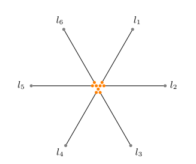 </div> </span> <div data-fragment-index="19" style="margin-left: 55%;width:50%" id="" class="fragment graph"> 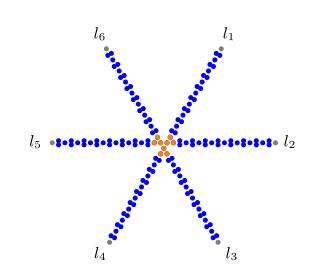 </div> </div> </section> <section class="graph-section" id="ascendlayergraph1"> <div style="width: 100%; height:80vh"> <div style="width: 49%; float: left;font-size: 0.65em;"> <b style="font-size:0.99em">Ascending Layer$^{\dagger}$</b> <ul data-fragment-index="1" class="fragment"> <span data-fragment-index="8" class="fragment hide fade-out"> <li>Purpose: The ascending layer connects the bottom layer with the top layer</li> <p></p> <!-- <li data-fragment-index="4" class="fragment"><span>For each element $u \in X$, place 2 vertices $u', l'$ such that <ul> <li data-fragment-index="5" class="fragment"> $u'$ is directly above a vertex corresponding to $u \in X$ </li> <li data-fragment-index="6" class="fragment"> $l'$ is directly below a terminal $l$ corresponding to $u \in X$ </li> <li data-fragment-index="7" class="fragment"> Create edges $\{u, u'\}$, $\{u', l'\}$, $\{l', l\}$ </li> </ul> </li> --> </span> <li data-fragment-index="9" class="fragment">Replace every edge with a chain of vertex triples that form a isosceles triangle with two edges of length 1 and one of $\epsilon$ </li> </ul> </div> <span style="position: absolute; left:0; bottom: 5em; width:100%" data-fragment-index="10" class="fragment fade-out hide"> <div data-fragment-index="2" style="width:100%" id="" class="row fragment"> <div id="" class=" column"> 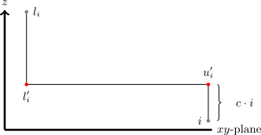 </div> <div id="" data-fragment-index="3" class="fragment column"> <img style="" width="auto" height="100%" data-src="images/graphs/ascending2.svg"> </div> <div id="" data-fragment-index="3" class="fragment column"> 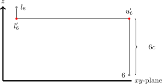 </div> </div> </span> <span style="position: absolute; left:0; bottom: 5em; width:100%"> <div data-fragment-index="10" style="width:100%;" id="" class="row fragment"> <div id="" class=" column"> 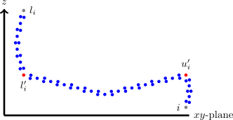 </div> <div id="" class=" column"> 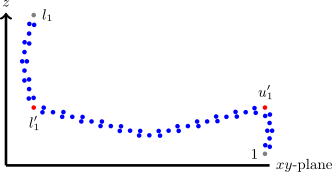 </div> <div id="" class=" column"> 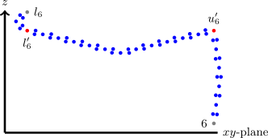 </div> </div> </span> <div style="position: absolute; left:0; bottom: 5em; width:100%;height: 1em;font-size: 0.35em;">$\dagger$ Additional protocol is necessary to avoid ascending layers bumping into each other.</div> </section> <section class="graph-section" id="alllayers" data-transition="fade-out"> <div style="width: 100%; height:80vh"> <div style="width: 100%; float: left;font-size: 0.65em;"> <b style="font-size:0.99em">All Layers$^{\dagger}$</b> <ul data-fragment-index="1" class="fragment"> <li data-fragment-index="1" class="fragment"> Example from Slide 8<br> <span data-fragment-index="2" class="fragment">$I = (X,\mathcal{C})$</span> <ul data-fragment-index="14" class="fragment"> <li>$\small X = \{1,2,3,4,5,6\}$</li> <li>$\small \mathcal{C} = \{\{1,2,3\}, \{1,2,4\}, \{1,3,5\}, \{2,4,6\}, \{3,5,6\}, \{4,5,6\}\}$$\small ~~~= \{C_1,C_2,C_3,C_4,C_5,C_6\}$</li> </ul> </li> </ul> </div> <div style="position: absolute; left:0; bottom: 3em; width:100%" data-fragment-index="15" id="" class="row fragment"> <div id="" class=" column"> Bottom Layer 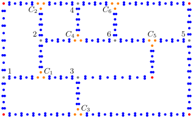 </div> <div id="" class=" column"> Ascending Layer </div> <div id="" class=" column"> Top Layer <img style="" width="auto" height="100%" data-src="images/graphs/top4.svg"> </div> </div> </div> <div style="position: absolute; left:0; bottom: 5em; width:100%;height: 1em;font-size: 0.35em;">$\dagger$ Additional protocol is necessary to avoid ascending layers bumping into each other.</div> </section> <section class="graph-section" id="allcomp" data-transition="fade-in"> <div style="width: 100%; height:80vh"> <div style="width: 100%; float: left;font-size: 0.65em;"> <b style="font-size:0.99em">All Layers$^\dagger$</b> <ul> <li> Example from Slide 8<br> <span>$I = (X,\mathcal{C})$</span> <ul> <li>$\small X = \{1,2,3,4,5,6\}$</li> <li>$\small \mathcal{C} = \{\{1,2,3\}, \{1,2,4\}, \{1,3,5\}, \{2,4,6\}, \{3,5,6\}, \{4,5,6\}\}$$\small ~~~= \{C_1,C_2,C_3,C_4,C_5,C_6\}$</li> </ul> </li> </ul> </div> <div style="width:1250px;height: 575px;" id="comp" class="row"></div> <!-- <div id="comp0" class="fragment"></div> --> <div id="comp1" class="fragment"></div> <div id="comp2" class="fragment"></div> <div id="comp3" class="fragment"></div> <div id="comp4" class="fragment"></div> <div id="comp5" class="fragment"></div> <div id="comp6" class="fragment"></div> <div id="comp7" class="fragment"></div> <div id="comp8" class="fragment"></div> <div id="comp9" class="fragment"></div> </div> <div style="position: absolute; left:0; bottom: 5em; width:100%;height: 1em;font-size: 0.35em;">$\dagger$ Additional protocol is necessary to avoid ascending layers bumping into each other.</div> </section> <section class="graph-section" id="ppoutcomegraph1"> <div style="width: 100%;"> <div> <b style="font-size:0.99em">Permanent popular outcome $\pi_{pp}$</b> <ul data-fragment-index="1" class="fragment"> <li><span data-fragment-index="2" class="fragment">For permanent popular outcome $\pi_{pp}$ we have <ul> <li data-fragment-index="3" class="fragment unhide" style="display: none"> For each vertex $v$, $\delta(v, \pi(v))$ is minimized </li> <li data-fragment-index="4" class="fragment unhide" style="display: none"> Exists regardless of PC-X3C instance $I$ having a solution </li> </ul> </li> </ul> </div> </div> </section> <section class="graph-section" id="ppbot0" data-transition="fade-out"> <div style="width: 100%;"> <div> <b style="font-size:0.99em">Permanent popular outcome $\pi_{pp}$</b> </div> <div style="width:100%"> <div> Bottom Layer </div> <div id="ppbot0-anim" style="display: block; width:85%"></div> </div> </div> </section> <section class="graph-section" id="ppbot1" data-transition="fade"> <div style="width: 100%;"> <div> <b style="font-size:0.99em">Permanent popular outcome $\pi_{pp}$</b> </div> <div style="width:100%"> <div> Bottom Layer </div> <div id="ppbot1-anim" style="display: block; width:85%"></div> </div> </div> </section> <section class="graph-section" id="ppbot2" data-transition="fade"> <div style="width: 100%;"> <div> <b style="font-size:0.99em">Permanent popular outcome $\pi_{pp}$</b> </div> <div style="width:100%"> <div> Bottom Layer </div> <div id="ppbot2-anim" style="display: block; width:85%"></div> </div> </div> </section> <section class="graph-section" id="ppbot3" data-transition="fade"> <div style="width: 100%;"> <div> <b style="font-size:0.99em">Permanent popular outcome $\pi_{pp}$</b> </div> <div style="width:100%"> <div> Bottom Layer </div> <div id="ppbot3-anim" style="display: block; width:85%"></div> </div> </div> </section> <section class="graph-section" id="ppbot4" data-transition="fade-in"> <div style="width: 100%;"> <div> <b style="font-size:0.99em">Permanent popular outcome $\pi_{pp}$</b> </div> <div style="width:100%"> <div> Bottom Layer </div> <div id="ppbot4-anim" style="display: block; width:85%"></div> </div> </div> </section> <section class="graph-section" id="ppascending0" data-transition="fade-out"> <div style="width: 100%;"> <div> <b style="font-size:0.99em">Permanent popular outcome $\pi_{pp}$</b> </div> <div style="width:100%"> <div> Ascending Layer </div> <div id="ppascending0-anim" style="display: block; width:85%"></div> </div> </div> </section> <section class="graph-section" id="ppascending1" data-transition="fade-in"> <div style="width: 100%;"> <div> <b style="font-size:0.99em">Permanent popular outcome $\pi_{pp}$</b> </div> <div style="width:100%"> <div> Ascending Layer </div> <div id="ppascending1-anim" style="display: block; width:85%"></div> </div> </div> </section> <section class="graph-section" id="pptop0" data-transition="fade-out"> <div style="width: 100%;"> <div> <b style="font-size:0.99em">Permanent popular outcome $\pi_{pp}$</b> </div> <div style="width:100%"> <div> Top Layer </div> <div id="pptop0-anim" style="display: block; width:50%"></div> </div> </div> </section> <section class="graph-section" id="pptop1" data-transition="fade"> <div style="width: 100%;"> <div> <b style="font-size:0.99em">Permanent popular outcome $\pi_{pp}$</b> </div> <div style="width:100%"> <div> Top Layer </div> <div id="pptop1-anim" style="display: block; width:50%"></div> </div> </div> </section> <section class="graph-section" id="ppoutcomegraph1" data-transition="fade-in"> <div style="width: 100%;"> <p style="color:white">Solution $S = \{C_1, C_6\}$</p> <div style="width:100%" class="row"> <div class=" column"> Bottom Layer 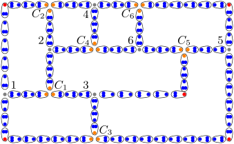 </div> <div id="" class=" column"> Ascending Layer </div> <div id="" class=" column"> Top Layer <img style="display: block;" width="auto" height="100%" data-src="images/graphs/top6.svg"> </div> </div> </div> </section> <!-- ----------------------------------------------------------------------------------------------------------- --> <section class="graph-section" id="redoutcomegraph1"> <div style="width: 100%;"> <div> <b style="font-size:0.99em">Reduced outcome $\pi_{S}$</b> <ul> <span > <li class="fragment">For reduced outcome $\pi_{S}$ we have <ul> <li class="fragment"> For each vertex $v$, $\delta(v, \pi(v))$ is minimized </li> <li class="fragment" style="color:red"> Exactly one per solution $S$ of PC-X3C instance $I$ exists. </li> </ul> </li> </ul> </div> <p class="fragment">Solution $S = \{C_1, C_6\} = \{\{1,2,3\}, \{4,5,6\}\}$</p> </div> </section> <section class="graph-section" id="reducedbot0" data-transition="fade-out"> <div style="width: 100%;"> <div> <b style="font-size:0.99em">Reduced outcome $\pi_{reduced}$</b> </div> <p>Solution $S = \{C_1, C_6\} = \{\{1,2,3\}, \{4,5,6\}\}$</p> <div style="width:100%"> <div> Bottom Layer </div> <div id="reducedbot0-anim" style="display: block; width:75%"></div> </div> </div> </section> <section class="graph-section" id="reducedbot1" data-transition="fade"> <div style="width: 100%;"> <div> <b style="font-size:0.99em">Reduced outcome $\pi_{reduced}$</b> </div> <p>Solution $S = \{C_1, C_6\} = \{\{1,2,3\}, \{4,5,6\}\}$</p> <div style="width:100%"> <div> Bottom Layer </div> <div id="reducedbot1-anim" style="display: block; width:75%"></div> </div> </div> </section> <section class="graph-section" id="reducedbot2" data-transition="fade"> <div style="width: 100%;"> <div> <b style="font-size:0.99em">Reduced outcome $\pi_{reduced}$</b> </div> <p>Solution $S = \{C_1, C_6\} = \{\{1,2,3\}, \{4,5,6\}\}$</p> <div style="width:100%"> <div> Bottom Layer </div> <div id="reducedbot2-anim" style="display: block; width:75%"></div> </div> </div> </section> <section class="graph-section" id="reducedbot3" data-transition="fade"> <div style="width: 100%;"> <div> <b style="font-size:0.99em">Reduced outcome $\pi_{reduced}$</b> </div> <p>Solution $S = \{C_1, C_6\} = \{\{1,2,3\}, \{4,5,6\}\}$</p> <div style="width:100%"> <div> Bottom Layer </div> <div id="reducedbot3-anim" style="display: block; width:75%"></div> </div> </div> </section> <section class="graph-section" id="reducedbot4" data-transition="fade"> <div style="width: 100%;"> <div> <b style="font-size:0.99em">Reduced outcome $\pi_{reduced}$</b> </div> <p>Solution $S = \{C_1, C_6\} = \{\{1,2,3\}, \{4,5,6\}\}$</p> <div style="width:100%"> <div> Bottom Layer </div> <div id="reducedbot4-anim" style="display: block; width:75%"></div> </div> </div> </section> <section class="graph-section" id="reducedbot5" data-transition="fade-in"> <div style="width: 100%;"> <div> <b style="font-size:0.99em">Reduced outcome $\pi_{reduced}$</b> </div> <p>Solution $S = \{C_1, C_6\} = \{\{1,2,3\}, \{4,5,6\}\}$</p> <div style="width:100%"> <div> Bottom Layer </div> <div id="reducedbot5-anim" style="display: block; width:75%"></div> </div> </div> </section> <section class="graph-section" id="reducedascending0" data-transition="fade-out"> <div style="width: 100%;"> <div> <b style="font-size:0.99em">Reduced outcome $\pi_{reduced}$</b> </div> <p>Solution $S = \{C_1, C_6\} = \{\{1,2,3\}, \{4,5,6\}\}$</p> <div style="width:100%"> <div> Ascending Layer </div> <div id="reducedascending0-anim" style="display: block; width:75%"></div> </div> </div> </section> <section class="graph-section" id="reducedascending1" data-transition="fade-in"> <div style="width: 100%;"> <div> <b style="font-size:0.99em">Reduced outcome $\pi_{reduced}$</b> </div> <p>Solution $S = \{C_1, C_6\} = \{\{1,2,3\}, \{4,5,6\}\}$</p> <div style="width:100%"> <div> Ascending Layer </div> <div id="reducedascending1-anim" style="display: block; width:75%"></div> </div> </div> </section> <section class="graph-section" id="reducedtop0" data-transition="fade-out"> <div style="width: 100%;"> <div> <b style="font-size:0.99em">Reduced outcome $\pi_{reduced}$</b> </div> <p>Solution $S = \{C_1, C_6\} = \{\{1,2,3\}, \{4,5,6\}\}$</p> <div style="width:100%"> <div> Top Layer </div> <div id="reducedtop0-anim" style="display: block; width:50%"></div> </div> </div> </section> <section class="graph-section" id="reducedtop1" data-transition="fade-in"> <div style="width: 100%;"> <div> <b style="font-size:0.99em">Reduced outcome $\pi_{reduced}$</b> </div> <p>Solution $S = \{C_1, C_6\} = \{\{1,2,3\}, \{4,5,6\}\}$</p> <div style="width:100%"> <div> Top Layer </div> <div id="reducedtop1-anim" style="display: block; width:50%"></div> </div> </div> </section> <section class="graph-section" id="redoutcomegraph1"> <div style="width: 100%;"> <p >Solution $S = \{C_1, C_6\} = \{\{1,2,3\}, \{4,5,6\}\}$</p> <div style="width:100%" class="row"> <div class=" column"> Bottom Layer <img style="display: block;" width="auto" height="100%" data-src="images/graphs/bottom3.svg"> </div> <div id="" class=" column"> Ascending Layer 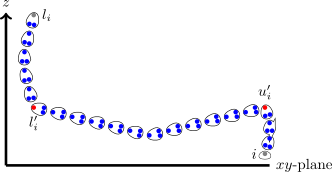 </div> <div id="" class=" column"> Top Layer <img style="display: block;" width="auto" height="100%" data-src="images/graphs/top5.svg"> </div> </div> </div> </section> <!-- <section class="graph-section"> <h5><b>Theorem:</b> strict popularity with <span style="color:red"><b>room size 3</b></span> is <span style="color:red"><b>co-NP-hard</b></span></h5> <div style="width: 100%;"> <div style="width:100%" class="row"> <div class=" column"> <b>$\pi_{pp}$ Top Layer</b> </div> <div id="" class=" column"> <b>$\pi_{S}$ Top Layer</b> </div> </div> </div> </section> --> <section class="graph-section" id="conclusion"> <p style="width: 100%; text-align: center;"> <span data-fragment-index="46" class="fragment">PC-X3C instance $I$ has <b>no</b> solution<br> <span data-fragment-index="47" class="fragment">$\iff$</span><br> <span data-fragment-index="48" class="fragment">$G$ has a <b>strictly popular</b> outcome</span><span data-fragment-index="49" class="fragment"> $\Box$</span></span> <p> </section> --- ### Future Work <section> <h4>Complexity</h4> <table data-fragment-index="0" class="fragment"> <tr> <th>Equilibrium Concept</th> <th>Room size</th> <th> 3D-Euclidean Roommates Problem</th> </tr> <tr data-fragment-index="1" class="fragment"> <td>Strict Popularity</td> <td>$3$</td> <td style="color: red">co-NP-hard</td> </tr> <tr data-fragment-index="2" class="fragment"> <td>Popularity</td> <td>$2$</td> <td><span data-fragment-index="3" class="fragment" style="color:green">P</span>?</td> </tr> <tr data-fragment-index="4" class="fragment"> <td>Strict Popularity</td> <td>$> 3$</td> <td><span data-fragment-index="5" class="fragment" style="color:red">co-NP-hard</span>?</td> </tr> <tr data-fragment-index="6" class="fragment"> <td>Mixed Popularity</td> <td>$\geq 3$</td> <td><span style="color:red">co-NP-hard</span>? (Search Problem)</td> </tr> <tr data-fragment-index="7" class="fragment"> <td>Popularity</td> <td>$\geq 3$</td> <td><span style="color:red">co-NP-hard</span>?</td> </tr> </table> <br> <ul class="fragment"> <li><span style="color: red;">2D</span>-Euclidean Roommates Problem?</li> </ul> </section> <section> <h4>Popularity with room size $2$</h4> <div style="width: 100%;"> <div style="width: 50%; float: left;font-size: 0.65em;"> <ul> <li data-fragment-index="0" class="fragment">Game $G = (N, 2, E)$</li> <li data-fragment-index="2" class="fragment">Weighted graph $G' = (V, E', w)$ <ul> <li data-fragment-index="3" class="fragment">$V = N$</li> <li data-fragment-index="5" class="fragment">$E = \{\{u,v\} \mid u \neq v \wedge u,v \in N\}$</li> <li data-fragment-index="7" class="fragment">$w(u,v) = \delta(u,v)$ <ul> <li data-fragment-index="8" class="fragment"> <span>E.g. $\delta(a,f)$</span><br> <span data-fragment-index="9" class="fragment">$= \delta((1,4.5,5), (0.5,0,0))$</span><br> <span data-fragment-index="10" class="fragment">$= \sqrt{(0.5-1)^2 + (0-4.5)^2 +(0-5)^2}$</span><br> <span data-fragment-index="11" class="fragment">$= \sqrt{45.5}$</span><br> <span data-fragment-index="12" class="fragment">$= w(a,f)$</span> </li> </ul> </li> </ul> </li> <br> <li data-fragment-index="13" class="fragment"><b>Conjecture:</b> <span data-fragment-index="14" class="fragment">Minimum weight matching $M'$ of $G'$</span> <span data-fragment-index="15" class="fragment">corresponds to a popular matching $M$ of $G$.</span></li> </ul> </div> <div data-fragment-index="1" style="margin-left: 50%;width:50%; height: 50%;" id="graph4-plotly" class="fragment graph"></div> <div id="graph5-cy" data-fragment-index="4" style="margin-left: 50%;width:50%;height:10em" class="fragment graph"></div> <div id="graph5-1-cy" data-fragment-index="6" class="fragment"></div> </div> </section> <section> <h4>(Mixed/Strict) Popularity with room size $\geq 3$</h4> <h5 data-fragment-index="1" class="fragment">Modify existing reduction</h5> <div data-fragment-index="2" style="width:100%" class="fragment row"> <div id="" class=" column"> Bottom Layer </div> <div id="" class=" column"> Ascending Layer </div> <div id="" class=" column"> Top Layer <img style="" width="auto" height="100%" data-src="images/graphs/top4.svg"> </div> </div> </div> </section> <section> <h4>Pros and cons</h4> <ul> <b class="fragment">Pros</b> <li class="fragment">Novel</li> <li class="fragment">Realizable</li> <li class="fragment">Interesting & Fun</li> </ul> <br> <ul> <b class="fragment">Cons</b> <li class="fragment">Limited significance</li> <li class="fragment">Not surprising results</li> </ul> </section> --- ### Bibliography <section> <table style="font-size:1em"> <tr> <td>[1]</td> <td>Gärdenfors, P.: Match making: Assignments based on bilateral preferences. Systems Research and Behavioral Science 20, 166–173 (1975). https://doi.org/10.1002/bs.3830200304, https://onlinelibrary.wiley.com/doi/10.1002/bs.3830200304</td> </tr> <tr> <td>[2]</td> <td>Deineko, V. G., & Woeginger, G. J. (2013). Two hardness results for core stability in hedonic coalition formation games. Discrete Applied Mathematics, 161(13-14), 1837-1842.</td> </tr> <tr> <td>[3]</td> <td>Chen, J., & Roy, S. (2021). Multi-dimensional stable roommates in 2-dimensional Euclidean space. arXiv preprint arXiv:2108.03868.</td> </tr> <tr> <td>[4]</td> <td>Di Battista, G., Liotta, G., & Vargiu, F. (1998). Spirality and optimal orthogonal drawings. SIAM Journal on Computing, 27(6), 1764-1811.</td> </tr> </table> </section> --- ### The end <section> <h2 style="text-align: center; margin-top:12%">Thank you for your attention!<h2> </section> --- ### Appendix #### Related Work <section> <div style="width: 100%;"> <h4 data-fragment-index="1" class="fragment">Multidimensional Stable Roommates Problem with metric preferences$^{[2]}$</h4> <table data-fragment-index="2" class="fragment"> <tbody> <tr> <td></td> <td>Metric Space (Room size > 2)</td> </tr> <tr> <td>Core Stability</td> <td style="color:red" data-fragment-index="3" class="fragment">NP-Complete</td> </tr> </tbody> </table> </div> </br> </br> <div style="width: 100%;"> <h4 data-fragment-index="4" class="fragment">2D-Euclidean Stable Roommates Problem$^{[3]}$</h4> <table data-fragment-index="5" class="fragment"> <tbody> <tr> <td></td> <td><b>2D</b>-Euclidean Space (Room size > 2)</td> </tr> <tr> <td>Core Stability</td> <td style="color:red" data-fragment-index="6" class="fragment">NP-Complete</td> </tr> </tbody> </table> </div> </section> --- ### Appendix #### Results <section class="graph-section" id="toplayergraph1"> <h5><b>Theorem:</b> strict popularity with <span style="color:red"><b>room size 3</b></span> is <span style="color:red"><b>co-NP-hard</b></span></h5> <h5>Reduction Sketch</h5> <div style="width: 100%;"> <div style="width: 49%; float: left;font-size: 0.65em;"> <b style="font-size:0.99em">Top Layer</b> <ul data-fragment-index="1" class="fragment"> <span data-fragment-index="5" class="fragment fade-out hide"> <li><span data-fragment-index="2" class="fragment">Place 3 vertices in a center that form an equilateral triangle</li> </span> <span data-fragment-index="12" class="fragment fade-out hide"> <li data-fragment-index="6" class="fragment unhide" style="display: none">Attach binary trees to the center vertices such that <ul> <li data-fragment-index="7" class="fragment unhide" style="display: none"> The parent form a equilateral triangle with their children </li> <li data-fragment-index="8" class="fragment unhide" style="display: none"> The edge length of the equilateral decreases exponentially, the closer they are to the leaves </li> <li data-fragment-index="9" class="fragment unhide" style="display: none"> The number of leaves is equivalent to the number of elements in universe $X$ </li> </ul> </li> </span> <span data-fragment-index="16" class="fragment fade-out hide"> <li data-fragment-index="13" class="fragment unhide" style="display: none">Split every internal vertex into 3 new vertices along the binary tree edges that form an equilateral triangle</li> </span> <li data-fragment-index="17" class="fragment unhide" style="display: none">Replace every edge with a chain of vertex triples that form a isosceles triangle with two edges of length 1 and one of $\epsilon$</li> </ul> </div> <span data-fragment-index="10" class="fragment fade-out hide"> <div data-fragment-index="3" style="margin-left: 55%;width:50%" id="" class="fragment graph"> </div> </span> <span data-fragment-index="14" class="fragment fade-out hide"> <div data-fragment-index="10" style="margin-left: 55%;width:50%" id="" class="fragment graph"> 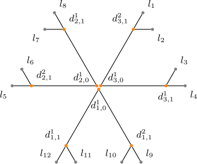 </div> </span> <span data-fragment-index="18" class="fragment fade-out hide"> <div data-fragment-index="14" style="margin-left: 55%;width:50%" id="" class="fragment graph"> 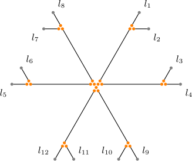 </div> </span> <div data-fragment-index="18" style="margin-left: 55%;width:50%" id="" class="fragment graph"> 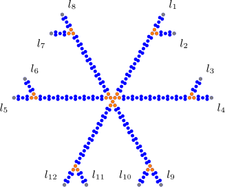 </div> </div> </section> --- ### Appendix #### On the Ascending Layers$^\dagger$ <section> <p style="width: 100%;"> The $xy$-plane of the auxiliary set agents $u'_i$ and $l'_i$ is free from other agents, except for the parts of other ascending layers that go straight up. That is, the parts of the chains from $u_j$ to $u'_j$ and from $l'_j$ to $l_j$. Due to the construction of the bottom layer, the distance between two of such parts that go straight up is at least $10-\epsilon$. Thus, when constructing the part of the ascending layer that is parallel to the $xy$-plane, that is the chain from $u'_i$ to $l'_i$, we have enough space to "go around" a straight up chain parts from $u_j$ to $u'_j$ or $l'_j$ to $l_j$. Additionally, we can verify in constant time, whether two lines intersect. </p> </section>